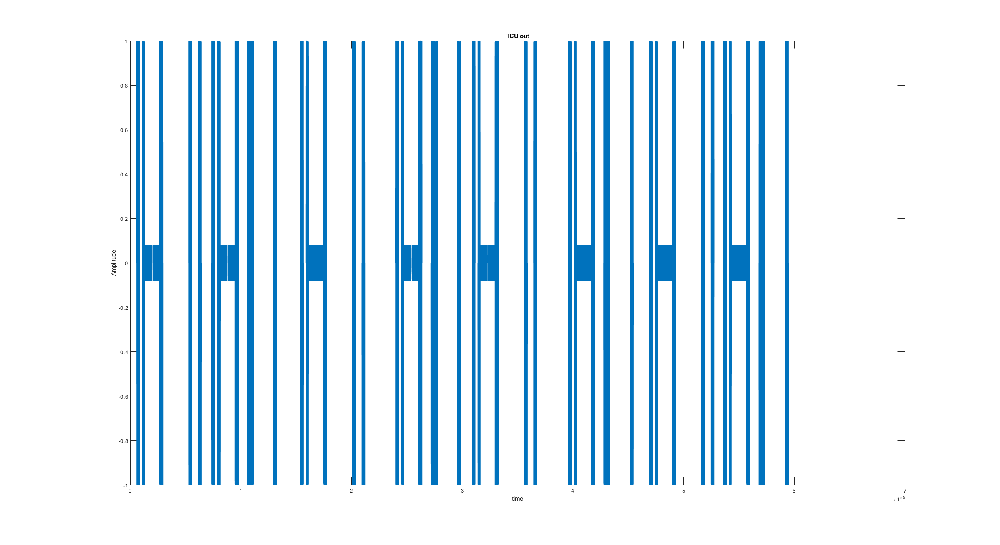
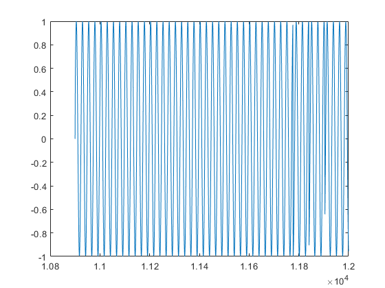

AZ = '0 0 1 0 0 0 1';
BAZ = '1 1 1 0 0 0 1';
EL = '1 0 0 0 0 0 1';
a = totalMatrix;
BPSK = a(:, 2);
DPSK = bpskdpsk64(BPSK);
TX_enable_prev = 0;
FID_flag = 0;
FunctionIDs = zeros(50 , 25);
FID_count = 1;
FID_bit = 1;
SBS_prev = 0;
FID_count = FID_count-1;
outArray = zeros(length(a(:, 1)), 1);
thetaR = 0;
thetaBW = 0;
thetaMIN = 0;
thetaMax = 0;
FID_itr = 1;
omega = 156250;
prevSBS = 0;
y = 0;
BPSK = a(:, 2);
DPSK = bpskdpsk64(BPSK);
for i = 1: length(a(:,1))
TX_enable = a(i, 1);
DPSKitr = DPSK(i);
TO_FRO = a(i, 3);
SBS = a(i, 4);
ANT_pos = a(i, 5:7);
ANTread = a(i, 8);
if ANTread == 1
ANT = num2str(ANT_pos);
switch ANT
case '0 0 0'
A = 1;
case '0 0 1'
A = 0.5;
case '0 1 0'
A = 0.25;
case '0 1 1'
A = 0.125;
case '1 0 0'
A = -1
case '1 0 1'
A = 10;
case '1 1 0'
A = 0;
case '1 1 1'
A = 0;
end
end
if TX_enable == 1
if SBS == 1 && prevSBS == 0
switch(stationNumber)
case 0
functionID = AZ;
case 1
functionID = BAZ;
case 2
functionID = EL;
end
if strcmp(num2str(functionID), AZ)
thetaR = -5;
thetaBW = 2;
thetaMIN = -62;
thetaMAX = 62;
elseif strcmp(num2str(functionID), BAZ)
thetaR = -5;
thetaBW = 2;
thetaMIN = -42;
thetaMAX = 42;
elseif strcmp(num2str(functionID), EL)
thetaR = 3;
thetaBW = 1.5;
thetaMIN = -2;
thetaMAX = 30;
else
thetaR = 0;
thetaBW = 0;
thetaMIN = 0;
thetaMax = 0;
end
scanStart = i;
while TX_enable ~= 0
TX_enable = a(i, 1);
TO_FRO = a(i, 3);
SBS = a(i, 4);
if TO_FRO == 1
thetaT = thetaMIN + (i-scanStart)/50;
end
if TO_FRO == 0
thetaT = thetaMIN - (i-scanStart)/50;
end
outArray(i) = A * (sin(pi*(thetaT - thetaR)/(1.15*thetaBW)) / (pi * (thetaT - thetaR) / (1.15 * thetaBW)) * sin(omega * i));
i = i + 1;
end
i = i - 1;
else
outArray(i) = A * sin(i * omega + DPSKitr * pi);
end
else
outArray(i) = 0;
end
prevSBS = SBS;
end
figure(1)
plot(1:length(outArray), outArray)
xlabel('time');
ylabel('Amplitude');
title('TCU out');
figure(2)
plot(1.09 * 10^4:1.2 * 10^4, outArray(1.09 * 10^4:1.2 * 10^4))
 